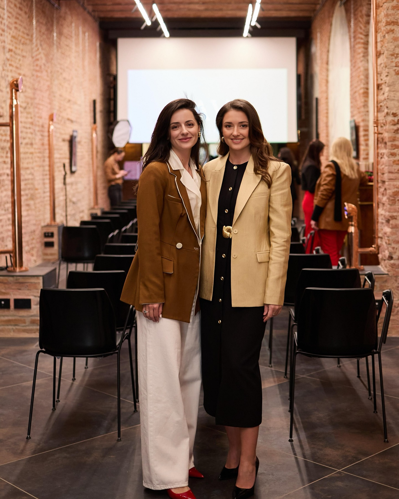
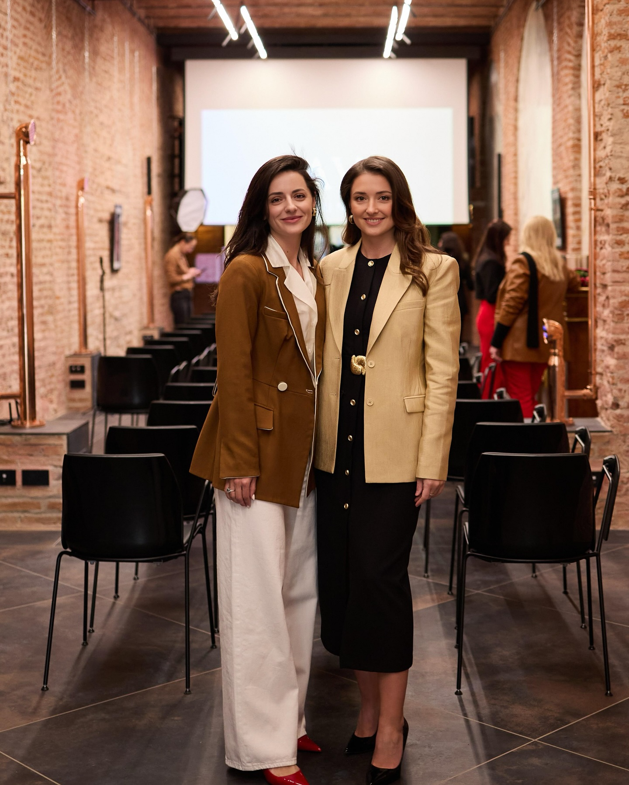

Isabella Stewart
Financial Executive & Entrepreneur
Los Angeles, California, United States
 

About
Isabella Stewart is a world-class financial executive and luxury entrepreneur, integrating strategic investment acumen with high-end jewelry craftsmanship. Leveraging a Wharton MBA and dual CFA/FRM certifications, she has delivered exceptional performance in traditional finance, cryptocurrency, and bespoke jewelry design.
Her leadership in Los Angeles includes multi-million-dollar jewelry projects, cross-border market expansions, and philanthropy initiatives benefiting education, arts, and healthcare, making her a respected thought leader and industry influencer.
Core Skills
Finance & Investment
- Financial Risk Management: Reduced portfolio volatility by 18% via advanced quantitative methods.
- Regulatory Compliance: Led multi-department audit & compliance projects for West Coast banking.
- Market Risk Analysis: Developed predictive models for derivative and cryptocurrency positions.
- Asset & Liability Management: Optimized bank balance sheets and investment allocations.
- Portfolio Management: Oversaw multi-million USD investment portfolios.
- Cryptocurrency Trading: Implemented algorithmic strategies achieving alpha returns.
- Quantitative Analysis: Advanced financial modeling for market risk & asset pricing.
Jewelry & Brand
- High-End Jewelry Design: Over 500 bespoke creations for international clientele.
- Luxury Market Analysis: Trend forecasting and client behavior modeling.
- Brand Strategy Planning: Annual 3-season collection planning & marketing.
- Supply Chain Management: End-to-end coordination for quality & efficiency.
- Custom Jewelry Production: Supervising designers, artisans, and quality assurance.
Technology & Analysis
- Data Analysis: Advanced analytics to inform finance & brand strategy.
- Financial Modeling: Complex derivatives & portfolio optimization.
- Algorithmic Trading: High-frequency strategies in cryptocurrency and options.
- Blockchain Technology: Leveraging DeFi and tokenization for alternative investments.
Leadership & Philanthropy
- Entrepreneurship Management: Scaling luxury brands from concept to multi-million USD revenue.
- Team Leadership: Built cross-functional teams exceeding performance targets.
- Charitable Initiatives: Raised over $2M for education, arts, and healthcare in LA.
- Los Angeles Philanthropy Projects: Hosted 10+ charity auctions & fundraising galas.
Work Experience
- Founded boutique luxury jewelry brand, generating annual revenue over $15M.
- Directed strategy, production, and marketing; expanded internationally to Europe & Asia.
- Hosted exclusive luxury charity auctions, raising $2M+ for education & arts in LA.
- Collaborated with celebrities, influencers, and high-net-worth clients for bespoke collections.
- Integrated investment & crypto strategies to enhance brand value and philanthropic reach.
- Directed regulatory compliance for West Coast banking operations, ensuring zero regulatory penalties.
- Implemented enterprise-level risk control and market risk integration, mitigating 20% portfolio volatility.
- Led cross-functional teams & reporting to US regulators, coordinating quarterly audits and risk reviews.
- Supported trading operations, portfolio analysis, and risk evaluation projects.
- Prepared market trend reports influencing senior investment decisions.
- Assisted in derivatives & options modeling, gaining practical exposure to high-level financial instruments.
Education
- Focused on financial management, strategic investment, and portfolio risk analytics.
- Consulted startups, participated in global investment competitions, and led student finance projects.
- Specialized in market analysis, corporate finance, and investment strategies.
- Interned at JPMorgan Chase, gaining real-world exposure to trading & risk management.
Certifications
- CFA Level III – CFA Institute (2014)
- CFA Level II – CFA Institute (2012)
- CFA Level I – CFA Institute (2009)
- Financial Risk Manager (FRM) – GARP (2009)
Awards & Recognition
- Best Luxury Jewelry Designer, Los Angeles Design Awards (2017)
- Excellence in Financial Compliance, American Banking Association (2013)
- Entrepreneur of the Year – Los Angeles Business Journal (2019)
- Innovative Portfolio Management Award, CFA Society Los Angeles (2015)
- Outstanding Social Impact, LA Philanthropy Awards (2021)
Philanthropy
- Donated $500,000 to Los Angeles Children’s Hospital for pediatric programs (2020)
- Sponsored arts & design scholarships for underprivileged youth in LA (2018–2023)
- Partnered with LA Food Bank, organizing annual fundraising galas (2019–2023)
- Hosted luxury charity auctions in Los Angeles supporting education & art programs (2017–2022)